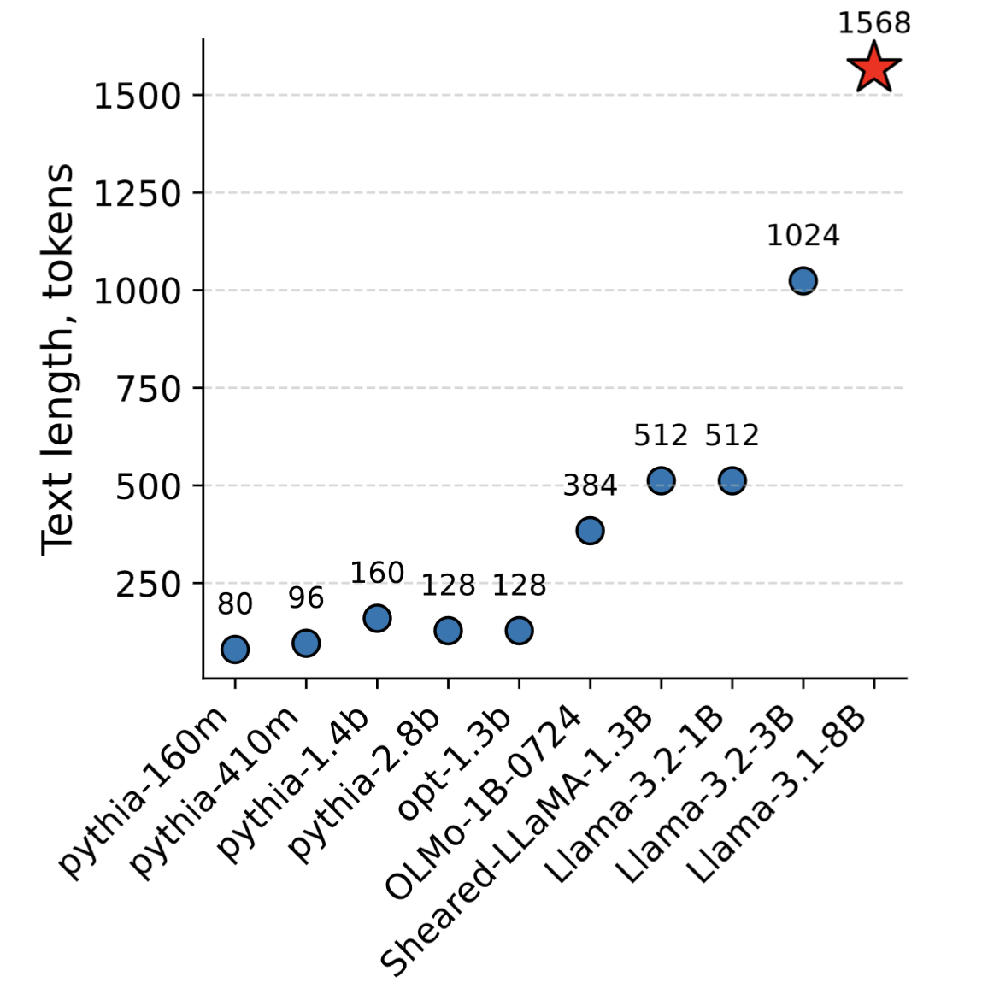
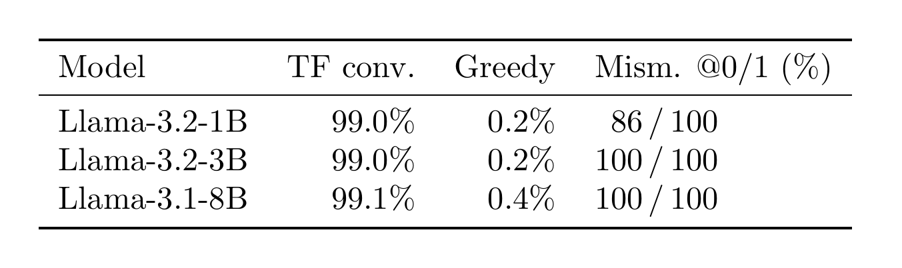
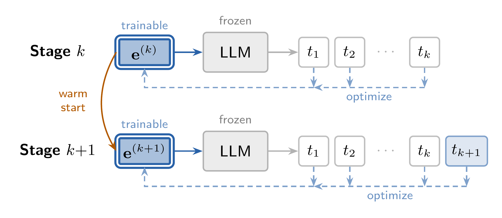
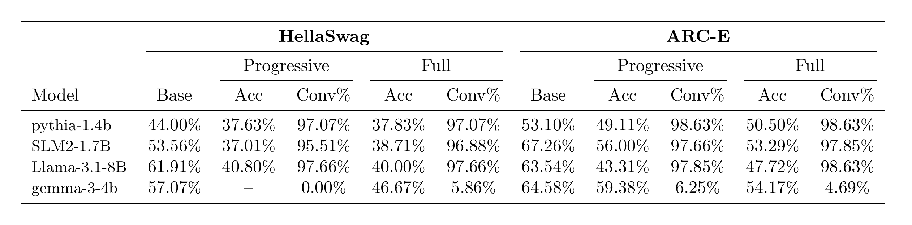
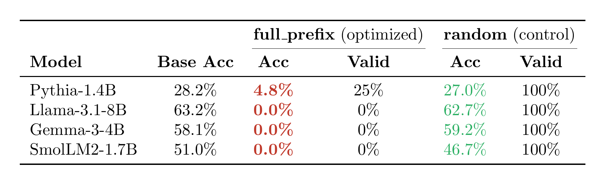
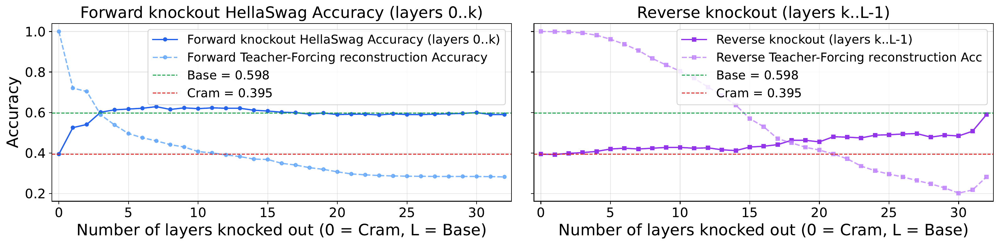
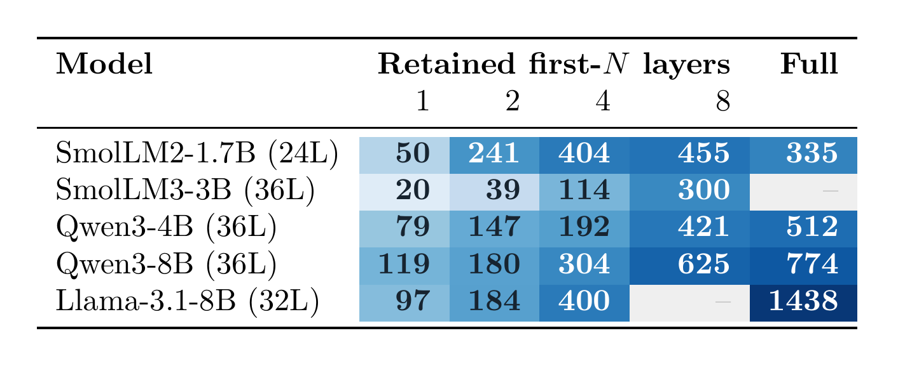
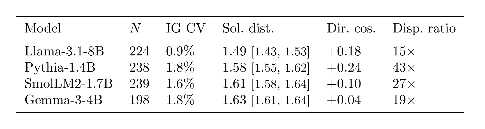
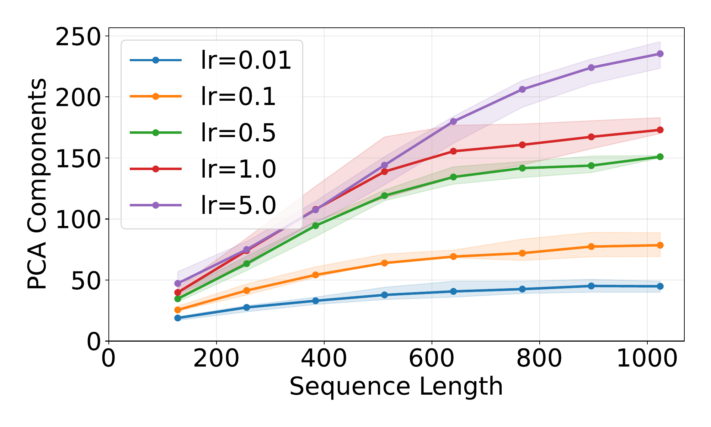
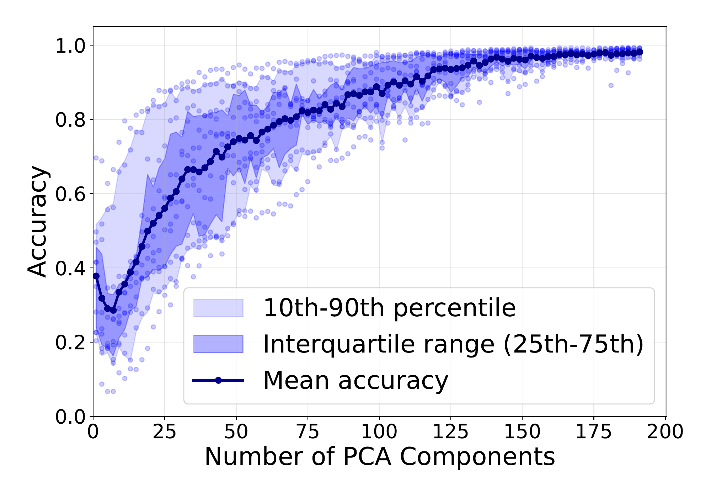

The cramming task of Kuratov et al. (2025), “Cramming 1568 tokens into a single vector and back again” (ACL) — a frozen LM reconstructs a sequence from one trained input embedding.
The answer
More than a thousand tokens — in one vector

Result from Kuratov et al. (2025).
The catch
“99%” is an illusion

Teacher-forced accuracy is ~99%, but greedy generation collapses to ~0% — because the missing 1% lands on the
first one or two tokens, and one early miss cascades.
The fix
Progressive cramming

Grow the target one token at a time, warm-starting each stage; stop only when perfect reconstruction is no longer possible.
Full cramming leaves ~1% error → 0% generation; progressive guarantees 0% error → 100%.
Watch the optimizer walk
PC1–PC2 projection of the progressive trajectory (Llama-3.1-8B, length-1000). Each point perfectly stores the prefix so far; the basin of perfect reconstruction shrinks as tokens are added. First two components = 65.7% of variance — the path is low-dimensional.
The twist
Does perfect reconstruction = understanding?
No.

Prepending the crammed embedding drops accuracy on HellaSwag & ARC-E across families — even with the original prefix still in context (scored on the converged subset only).
The sharpest test
Generative MMLU collapses

5-shot MMLU, 512 samples — a single compressed embedding placed in context (full table in the appendix). Acc = accuracy, Valid = % of parseable answers.
Why? Causal attention knockout
The early layers drive the collapse

Forward knockout (left) masks early→late: downstream accuracy returns to the uncompressed baseline after only the first few layers, even as reconstruction is destroyed. Reverse knockout (right) recovers only once it reaches the early layers — so the embedding does its damage by steering the early layers. The same pattern holds across model families (Llama-3.1-8B, Pythia-1.4B, SmolLM2-1.7B).
Where capacity comes from
Capacity scales with depth & width

Mean perfectly-crammed tokens over 50 PG19 samples (darker = more). Keep only the first N decoder layers (then finetune): capacity rises with retained depth (→) and with model size (↓), and the two axes compound — capacity isn't magic, it's bought with the reconstructor's compute.
What cramming really reveals
Perfect reconstruction can be brittle steering — it stores nothing the model can use.
Capacity isn't magic: it scales with the reconstructor's depth & width.
Across all model families, the collapse is driven by the embedding's first few layers.
Explore the project →
code · released trajectories · paper
From a shared initialization, different learning rates reach equally-good solutions that are far apart and nearly orthogonal:

Equally-good solutions are farther from each other than from the start (Sol. dist. > 1) and nearly orthogonal (Dir. cos. ≈ 0). The valid-solution set is wide & high-dimensional; one trajectory is a thin slice.
Q&A · backup
Trajectory dimensionality & PCA reconstruction

Components for 99% variance grow ~logarithmically with length (Llama-3.1-8B).

PCA-reconstructed embeddings need many more components for teacher-forced accuracy — same early-token failure mode.